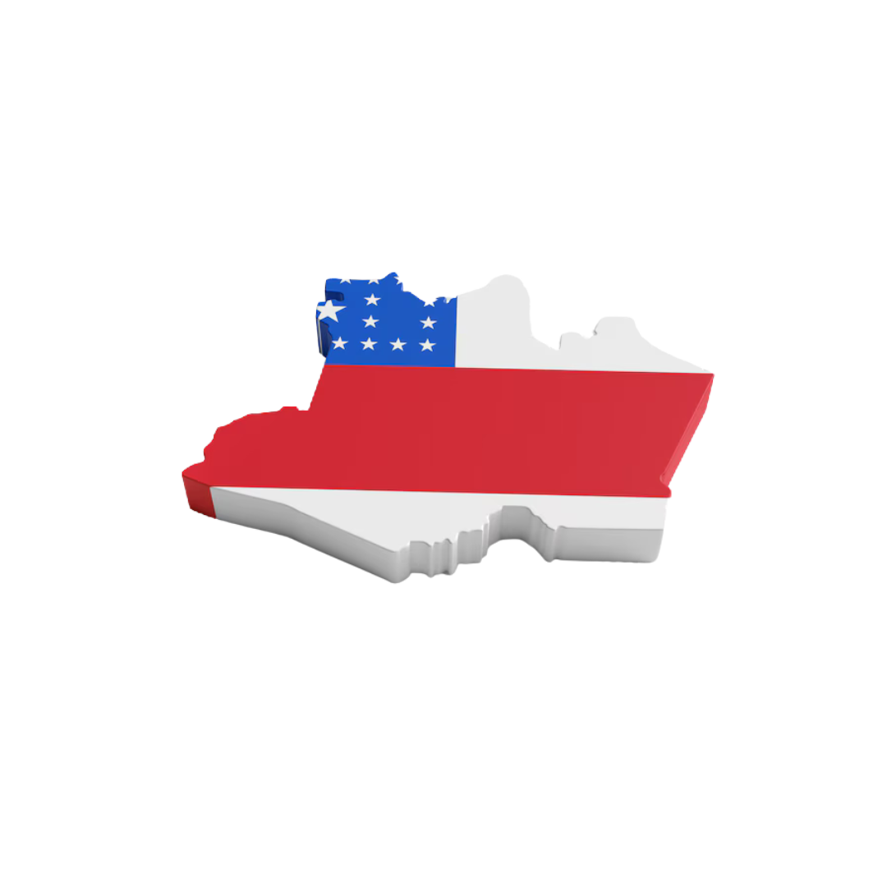

O estado do Amazonas, localizado no coração da Amazônia brasileira, é conhecido por sua vasta biodiversidade, por suas imensas florestas tropicais e por ser um centro econômico crucial para o Brasil e para o mundo. Sua economia é marcada por sua diversidade de recursos naturais, agropecuária, indústria e atividades extrativistas. A riqueza cultural e natural da região é uma grande vantagem, mas também traz desafios para seu desenvolvimento sustentável.
A economia do Amazonas é diversificada, com destaque para a agricultura, o extrativismo e a indústria. Vamos explorar mais a fundo os produtos mais importantes e a contribuição deles para o estado:
- Açaí: O Amazonas é responsável por mais de 70% da produção mundial de açaí. Seu uso crescente tanto no Brasil quanto no exterior como alimento saudável, em sucos e até mesmo em cosméticos, tem impulsionado a economia local.
- Castanha-do-brasil: O Amazonas é o maior produtor mundial da castanha-do-brasil, e os produtores da região são responsáveis por uma quantidade significativa de exportações. Ela é usada tanto para consumo direto quanto para a produção de óleos essenciais e cosméticos.
- Guaraná: Utilizado principalmente em bebidas energéticas e suplementos alimentares, o guaraná é um dos principais produtos agrícolas do Amazonas. A produção é tão relevante que o estado fornece mais de 90% do guaraná consumido no Brasil.
- Frutas Tropicais: Além do açaí, o Amazonas é grande produtor de frutas tropicais como banana, melancia, abacaxi e cacau. Estas frutas são tanto consumidas localmente quanto exportadas para outros estados e países.
- Madeira e Óleos Essenciais: A extração de madeira, especialmente de árvores como a maçaranduba e a castanheira, ainda é uma importante fonte de receita, apesar dos desafios ambientais. Além disso, os óleos essenciais de copaíba, andiroba e breu são amplamente utilizados na indústria de cosméticos e medicamentos naturais.
- Pesca Ornamental: O Amazonas é o maior exportador de peixes ornamentais do mundo. A pesca de espécies como o peixe-betta, o disco e o tetra é uma atividade importante para a economia local, com destino principalmente ao Japão e aos Estados Unidos.

O Amazonas é responsável por uma quantidade considerável de produtos que são essenciais para o Brasil e o mundo. A produção local é de enorme impacto na economia, gerando empregos e receitas para o estado.
- Açaí: Cerca de 6,1 milhões de toneladas produzidas anualmente, com a maior parte da produção concentrada no interior do estado, nas cidades de Maués e Itacoatiara.
- Castanha-do-brasil: Mais de 70 mil toneladas de castanhas são produzidas a cada ano no Amazonas, colocando o estado como líder absoluto na produção dessa commodity.
- Guaraná: O Amazonas é responsável por mais de 90% da produção nacional de guaraná, com grande parte sendo cultivada na região de Maués e Barcelos.
- Pesca Ornamentais: Mais de 20 milhões de peixes ornamentais são exportados do Amazonas anualmente, representando um mercado robusto que movimenta bilhões de reais.
A riqueza do Amazonas está diretamente ligada aos seus recursos naturais, e essa abundância tem um impacto profundo na economia local. Vamos explorar como os principais produtos da região geram riqueza para o estado e o Brasil.
- Açaí: Em 2023, o valor da produção de açaí foi de aproximadamente R$ 8,1 bilhões. A crescente demanda por esse fruto, tanto no Brasil quanto no exterior, tem impulsionado a produção e a economia regional.
- Pesca Ornamental: A exportação de peixes ornamentais para mercados internacionais, especialmente o Japão, representa uma movimentação de R$ 400 milhões para a economia do estado. O mercado de peixes ornamentais continua a crescer a cada ano, com novos nichos sendo explorados.
- Zona Franca de Manaus: A Zona Franca de Manaus é o motor industrial do Amazonas, com uma produção anual de produtos como motocicletas, eletrodomésticos e componentes eletrônicos. Em 2020, a Zona Franca de Manaus gerou cerca de R$ 100 bilhões em faturamento. Além disso, ela oferece emprego para milhares de pessoas, especialmente na capital, Manaus.
- Agropecuária: O setor agropecuário também tem grande impacto econômico. Em cidades como Itacoatiara e Lábrea, a produção de carne, leite e grãos movimenta bilhões de reais, com o estado sendo um dos maiores produtores de carne bovina do Norte do Brasil.

A economia do Amazonas não seria tão robusta sem o comércio exterior. O estado exporta uma variedade de produtos para países ao redor do mundo, o que tem contribuído para seu crescimento. Entre os principais clientes estão:
- Japão: O Japão é o maior importador de peixes ornamentais do Amazonas. Com uma cultura de pesca ornamental extremamente forte, o país compra milhões de peixes a cada ano.
- China: A China é o maior comprador de madeira do Amazonas, além de importar produtos agrícolas como grãos, frutas e óleo de palma.
- Estados Unidos: Os Estados Unidos importam uma grande quantidade de guaraná, óleos essenciais, além de itens alimentícios como castanha-do-brasil e café.
O Amazonas é um estado grande e diversificado, e suas cidades desempenham papéis cruciais em sua economia. Algumas das cidades mais relevantes são:
- Manaus: A capital do estado, Manaus, é o maior centro econômico e industrial do Amazonas. A Zona Franca de Manaus é um polo de produção e geração de empregos, com indústrias de tecnologia, motocicletas, componentes eletrônicos e mais. A cidade também é um ponto turístico importante, sendo a porta de entrada para a floresta amazônica.
- Coari: Famosa por ser um dos maiores centros produtores de petróleo e gás natural da região, Coari também tem uma economia forte no setor agropecuário, com grande produção de leite e carne.
- Itacoatiara: Com uma economia baseada na agropecuária, Itacoatiara é uma das cidades mais importantes para a produção de grãos, como milho, soja e feijão, além de ter uma forte produção de frutas tropicais.
- Barcelos: Conhecida pela pesca ornamental, Barcelos tem se destacado no cenário internacional, especialmente na exportação de peixes exóticos e ornamentais. A cidade também é um importante destino ecoturístico.
- Iranduba: Localizada próxima a Manaus, Iranduba tem se consolidado como um polo de produção de hortifrutigranjeiros, com destaque para o cultivo de frutas como melancia, banana e laranja.
Embora o Amazonas tenha um grande potencial econômico, o estado enfrenta vários desafios. A exploração descontrolada da floresta, o desmatamento e as questões sociais como a falta de infraestrutura e a pobreza ainda são problemas sérios. O desafio é encontrar formas de equilibrar o desenvolvimento econômico com a preservação ambiental.
Por outro lado, o Amazonas também possui inúmeras oportunidades, principalmente nas áreas de turismo sustentável, bioeconomia e energias renováveis. Com sua vasta biodiversidade, o estado pode se tornar um centro de inovação em bioenergia e produtos sustentáveis, que podem gerar novas oportunidades de trabalho e renda para as comunidades locais.